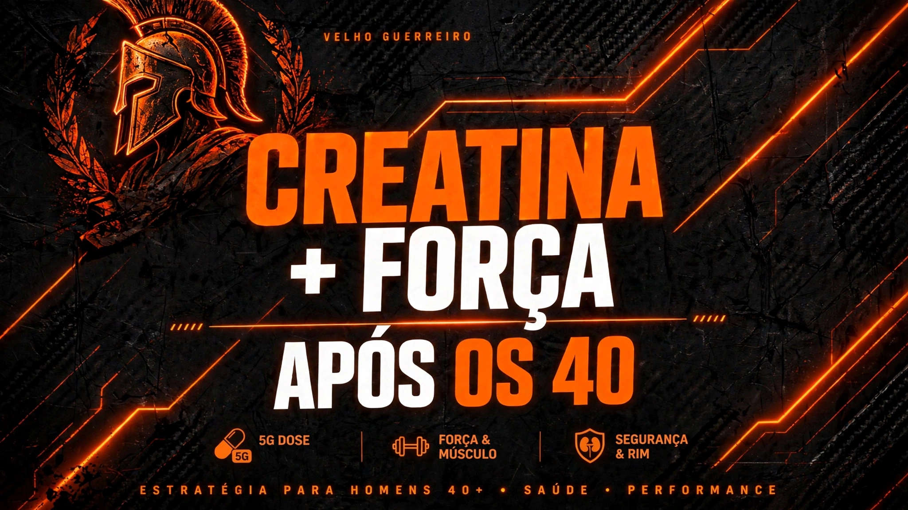

Suplementos 40+
Creatina Após os 40: Dose Certa, Benefícios Reais e Como Tomar Sem Medo
Faz mal para rim? Qual dose tomar? Veja o protocolo de 5g que me deu 15% a mais de força na barra e recuperação em 48h após os 40.
02/09/2026Ler Artigo →